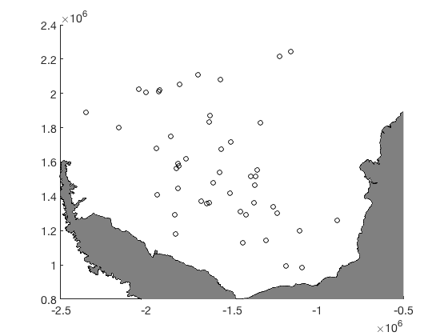
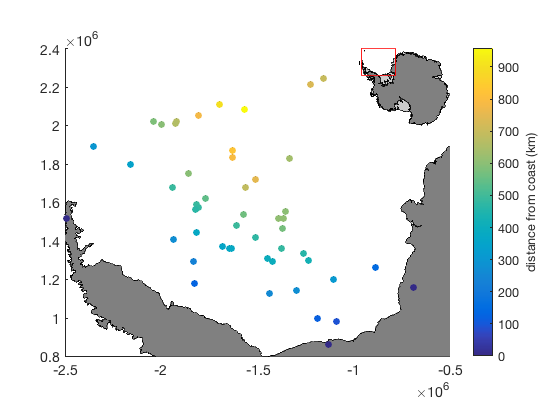
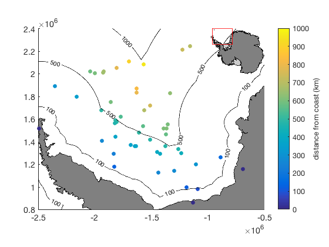

dist2mask documentation
dist2mask returns the distance in kilometers from given datapoints to any mask type (grounded, iceshelf, etc.) according to MEaSURES Antarctic Boundaries for IPY 2007-2009 from Satellite Radar, Version 2. This function is similar to the bedmap2_dist function in the Bedmap2 Toolbox.
The Antarctic Boundaries dataset is described on the NSIDC site here. An overview of the tools in this AMT plugin can be found here.
Contents
Syntax
d = dist2mask(masktype,lati,loni) d = dist2mask(masktype,xi,yi)
Description
d = dist2mask(masktype,lati,loni) gives the distance d from the geo locations (lati,loni) to the nearest mask type, which can be any of the following:
- 'grounded' all ice or rocks on the landward side of the InSAR-detected landward limit of flexure.
- 'iceshelf' all the bits of the ice sheet (not sea ice) on the seaward side of the landward limit of flexure.
- 'ice' any part of the ice sheet (not sea ice).
- 'openocean' any part of the open ocean (not ice shelves or sea ice).
- 'tidal' everything seaward of the landward limit of flexure, including ice shelves.
d = dist2mask(masktype,xi,yi) is the same as above, except coordinates are polar stereographic meters (ps71), which are automatically parsed by the islatlon function.
Example
Given these scattered points, let's say it's mooring data:
lat = -70+4*randn(50,1); lon = -45+6*randn(50,1); plotps(lat,lon,'ko'); antbounds('coast','poly','facecolor',0.5*[1 1 1],'facealpha',1)
Suppose you want to know the distance of each mooring to the nearest bit of ice sheet:
d = dist2mask('ice',lat,lon); scatterps(lat,lon,50,d,'filled') cb = colorbar; ylabel(cb,' distance from coast (km) ') mapzoomps('ne','frame','off') % places an inset map in the corner
Contouring distances from the coast
Sometimes you might want to plot a line a given distance from the coast, say, to show effects within 100, 500, and 1000 km from the coast. To do that, make a grid that fills your domain. Let's make a grid that fills the current axis limits, then calculate the distance to the coast for each grid point:
xl = xlim; % limits of current axes yl = ylim; [X,Y] = meshgrid(xl(1):1000:xl(2),yl(1):1000:yl(2)); D = dist2mask('ice',X,Y);
Now contour the 100, 500, and 1000 km distances from the coast:
hold on [C,h] = contour(X,Y,D,[100 500 1000],'k'); clabel(C,h) % labels the contours
Citing this dataset
If you use this dataset, please cite the following:
- Dataset citation: Mouginot, J., B. Scheuchl, and E. Rignot. 2017. MEaSUREs Antarctic Boundaries for IPY 2007-2009 from Satellite Radar, Version 2. [Indicate subset used]. Boulder, Colorado USA. NASA National Snow and Ice Data Center Distributed Active Archive Center. http://dx.doi.org/10.5067/AXE4121732AD.
- Literature citation: Rignot, E., S. S. Jacobs, J. Mouginot, and B. Scheuchl. 2013. Ice-shelf melting around Antarctica, Science. 341. 266-270. http://dx.doi.org/10.1126/science.1235798.
- Antarctic Mapping Tools: Greene, C. A., Gwyther, D. E., & Blankenship, D. D. Antarctic Mapping Tools for Matlab. Computers & Geosciences. 104 (2017) pp.151-157. doi:10.1016/j.cageo.2016.08.003.
Author Info
This function and supporting documentation were written by Chad A. Greene of the University of Texas Institute for Geophysics (UTIG), November 2016.